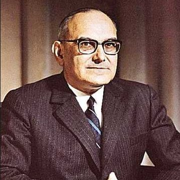

Estado novo foi um regime político ditatorial autoritário autocrata e cooperativista que vigorou em Portugal durante 41 anos.
A ditadura de regime do estado novo criou muito descontentamento da população. Foi um período de medo, onde a liberdade de cada um não era respeitada.
Havia uma censura que controlava a população portuguesa foi criada uma polícia política “A Pide” que prendia todas as forças que fossem contrárias ao regime.
Não havia liberdade de expressão em virtude de existir essa polícia política.
Em 1958 “Humberto Delgado” candidatou-se à presidência da república e apesar de ter um forte apoio como candidato e vencer perdeu as eleições para “Américo Tomás”.
O governo de Salazar conseguiu controlar e vencer as eleições e como Salazar não podia alterar os resultados termina com as eleições para presidência da república.
Com a ditadura do estado novo o país ficava cada vez pobre e atrasado o que fez nos anos 60 muitos portugueses emigrassem para outros países em busca de melhores condições de vida.
E em 1961 e o silêncio e a guerra colonial onde morram muitos jovens portugueses porque eram eles que iam para a frente na batalha.
E depois em 1968 por morte de Salazar o governo foi substituído e quem assume o governo é o professor Marcelo Caetano.
O presidente da república nessa altura ainda era Américo Tomás, Marcelo Caetano dá continuidade ao regime de Salazar, mas o seu poder fica cada vez mais enfraquecido com a guerra colonial. A falta de liberdade a guerra colonial e o aumento do custo de vida deixavam um descontentamento geral. Estavam reunidas finalmente as condições pro grande golpe militar.
Características da Ditadura de Salazar
de orientar a juventude para os valores patrióticos e nacionalistas do Estado Novo,
a inscrição era obrigatória entre os sete e os catorze anos.
História
Ditador
António Salazar
Marcelo Caetano
Colônias Portuguesas
| País | Angola | Moçambique | Cabo Verde | Guiné-Bissau | São Tomé e Príncipe | Goa |
|---|---|---|---|---|---|---|
| Bandeira |  |
 |
 |
 |
 |
 |